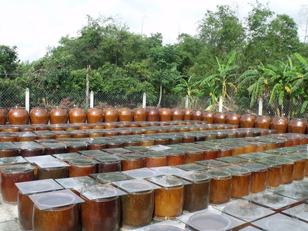
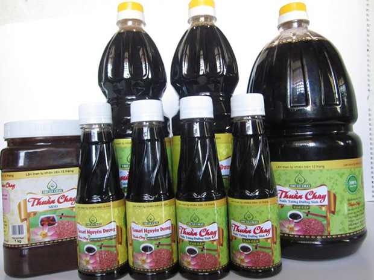

Nước tương dưỡng sinh Tamari nguyên dương
10.07.2010Từ thị xã Gò Công du khách theo đến Xóm Mãng - Tân Đông (theo hướng Tân Tây - Vàm Láng) tại đây du khách sẽ có dịp tham quan lò tương qui mô và vệ sinh tuyệt đối của cơ sở sản xuất nước tương Thuần Chay, đây là một lò sản xuất nước tương dưỡng sinh theo phương pháp OhSawa(*) với một qui trình thủ công và khép kín.
Nước tương sản xuất theo phương pháp dưỡng sinh OhSawa là loại nước tương cực ngon được chế biến từ hạt đậu nành nguyên chất!. Đậu phải được chọn lọc cùng loại, tươi ngon không sâu mọt, đem về rửa sạch và ngâm vào nước muối trắng đã bão hoà.
Sau đó đậu được đem vo sạch, ngâm nước từ 2-3 giờ rồi nấu chín, tiếp đến là cho đậu vào khạp sạch có chứa nước muối được lắng trong (15-20 lít nước/10kg đậu) và tiến hành đem đậu ra phơi nắng. Khạp chứa đậu có nắp khạp là một tấm kính trong suốt giúp đậu hấp thụ được ánh nắng của mặt trời dễ dàng mà không bị lẫn bất kỳ tạp chấp và bị mất đi lượng một nước không đáng kể.

Sau từ 2-3 tháng phơi nắng, tương sẽ có mùi thơm. Tiến hành lọc lấy nước và phơi nắng tiếp tục trong 10 tháng, sau đó đưa vào sử dụng (lúc này nước tương có màu nâu đen và đậm đặc). Đặc biệt càng để lâu càng tốt và thơm ngon, rất có lợi cho sức khỏe của người dùng, nước tương để trên 3 năm được gọi là “nước tương Tamari nguyên dương”, sản phẩm nước tương Tamari này hiện rất được các người dùng trên thế giới ưa chuộng vì ngoài sự giàu có đạm chất của mình ra nó còn có tác dụng trong việc cải tạo sức khoẻ và cân bằng dinh dưỡng cho cơ thể mà khoa học đã chứng minh và thực nghiệm:
Công dụng:
- Lọc máu, trợ tim, động kinh.
- Giải cảm, ngất xỉu..
- Khi cơ thể mệt mỏi do làm việc nhiều hoặc suy nhược. Pha 1 muỗng cà phê nước tương với 1 cốc nhỏ nước trà 3 năm (trà Bancha) có thể uống nhiều lần trong ngày
- Dùng với bột sắn dây có tác dụng tăng lực, bổ tỳ vị, giải nhiệt, mát gan, giải độc rượu, tiêu chảy, kiết lỵ, cao huyết áp (quậy 1 muỗng canh bột sắn dây với 1 chén nước, nấu chín cho vào 1 muỗng nước tương)
- Nước tương ngâm tỏi để lâu năm là một trợ phương hữu hiệu cho tất cả các chứng bệnh thuộc về tim mạch, tăng cường sức đề kháng cho cơ thể, giảm mệt mỏi.
- Nếu dùng nước tương TAMARI nguyên dương (1 muỗng canh pha với 5 muỗng nước trà) có hiệu quà tức thì với chứng đột quỵ, ngất xỉu, cảm cúm.
- Nếu lên cơn động tim thì dùng món tương trứng: đánh tan cả lòng đỏ lẩn lòng trắng trứng gà (có trống) pha với nửa phần nước tương lân năm rồi uống ngay, mỗi ngày chỉ uống 1 lần và không được dùng quá 3 ngày ( Xin xem thêm cách dùng trong sách “ ăn gạo lứt muối mè” và “ phòng và trị bệnh theo phương pháp thực dưỡng” của soạn giả Minh Ngô Thành Nhân )
Đặc biệt chữa trị:
- Sỏi mật, sỏi thận rất công hiệu.
- Gan nhiễm mỡ.. máu nhiễm mỡ.
- Đau thần kinh và tiểu đường.(Mỗi ngày dùng từ 1 đến 3 muỗng cà phê.)
Nói thì đơn giản, nhưng thực hiện nghề này không phải dễ. Vì đây là nghề cha truyền con nối mới có được và cũng cần thời gian trải nghiệm rất lâu cùng với những bí quyết tuyệt chiêu như: định lượng trong khâu tự chế cách ướp, bởi vì chỉ sơ sẩy nhỏ trong việc chế biến sẽ có thể làm hư cả một quá trình khổ cực hoặc sản phẩm sẽ bị biến đổi mùi vị, mất ngon!. Cách chế biến loại tương này được sử dụng công nghệ vi sinh theo phương pháp Dưỡng Sinh OHSAWA:
* Không sử dụng bất kỳ một hóa chất phụ gia bảo quản
* Công đoạn sản xuất từ nguyên liệu đến thành phẩm phải qua 1 thời gian tối thiểu là 12 tháng (phơi nắng và đảo đều mỗi ngày)
* Có thể để thời gian bao lâu cũng được , không hư và càng để lâu nước tương sẽ càng thơm ngon và càng có giá trị và hàm lượng dinh dưỡng cao.
* Nước tương Nguyên Dương ( TAMARI ) trên 3 năm có thể chữa được nhiều loại bệnh và có tác dụng giải độc
* Do thời gian phơi nắng lâu đã phát triển một số ENZIME rất có lợi cho sức khỏe
Hiện nay trên thị trường các sản phẩm nước tương kém vệ sinh và có quá nhiều chất phụ gia cũng như 3-MCPD được bày bán rộng rãi và khó đảm bảo sức khoẻ thì với thời gian chế biến khá lâu (thường là trên 12 tháng) và độ phức tạp và khép kín trong khâu sản xuất của mình đã làm cho nước tương Tamari nguyên dương càng có được giá trị quí báu của nó.

Hiện nay tại thị xã Gò Công chỉ tồn tại một lò sản xuất nước tương Tamari nguyên dương với qui mô 100lít/tháng. Ông Kim Sơn - chủ cơ sở sản xuất nước tương Thuần Chay - cho biết: "Muốn có được một mẻ nước tương Tamari nguyên dương đặc sắc, đúng điệu, người làm phải trải qua nhiều công đoạn rất phức tạp. Nếu sơ ý làm sai một công đoạn nào hay để nước lọt vào thì mẻ sẽ hư ngay, nước tương này hiện đang được các nhà hàng, quán ăn.. ngày một tin dùng cũng như những ai đang quan tâm đến sức khoẻ, và đặc biệt khi dùng trong nấu ăn nó càng làm tăng thêm sự tuyệt vời của món ăn mà bạn nấu.”
Nhiều thực khách bị cuốn hút bởi nước tương Tamari nguyên dương là hương vị dễ chịu, thơm ngon, không mùi khăm khẳm, lại hợp với khẩu vị Á Đông... Nước tương Tamari nguyên dương đã góp mặt trên thị trường nhiều nước như Mỹ, Úc, Canada. Bình quân mỗi tháng cơ sở sản xuất nước tương Thuần Chay cung cấp cho thị trường hàng trăm lít nước tương thành phẩm!
Nước tương Tamari nguyên dương không đơn thuần là món ăn thuần tuý, mà với nhiều thành phần bổ dưỡng, vệ sinh nó được mọi người trên tin tưởng sử dụng. Có dịp về Gò Công, ngang qua Xóm Mãng - Tân Đông hãy một lần đến tham quan và dùng thử nước tương tại đây! Có điều xin đừng thắc mắc khi thấy có thực khách “khề khà” tay mang tay xách hàng chục lít nước tương mang về. Bởi nước tương Tamari nguyên dương tuy ngon miệng nhưng giá cũng khá “mềm”.
Chú thích:
(*) Phương pháp dinh dưỡng OhSawa:
Giáo sư Georges Ohsawa người Nhật , tên thật là Nyoiti Sakurazawa ( 18-10-1893 ) . Hồi còn bé ông bẩm sinh bạc nhược , mẹ và các em đều chết yểu vị bệnh lao , đến năm 16 tuổi thì ông mang bệnh ngặt nghèo : ho lao , ung sang dạ dày , các bệnh viện đều bó tay , sau nhờ ăn uống đúng phép mà lành bệnh , từ đó hy sinh cả cuộc đời để nghiên cứu Dịch lý và Đông y , Tây y .
Dựa trên thuyết âm dương của triết học cổ Phương Đông đã tìm ra khả năng phi thường tiềm ẩn trong những đồ ăn tầm thường như gạo lứt , muối mè , các thứ rau củ ,.... khi con người ta biết sử dụng chúng đúng cách .
Phương pháp Ohsawa đã phổ biến hầu như khắp các nước trên thế giới trước 1964 đến nay. Vài năm gần đây vào đầu thế kỷ 21 Phương pháp Ohsama lại được báo chí Việt Nam đề cập đến và trên thế giới nhất là ở Hoa kỳ, Phương pháp này cũng được phổ biến rộng rãi hơn nhờ những hậu duệ của Giáo sư Ohsawa.
Tuy nhiên, ở Việt nam qua một thời gian gián đoạn phổ biến, số người mới, hiểu rõ phương pháp này không nhiều, trong khi bệnh hoạn và nhà thương phát triển không ngừng và phép chữa trị hiện đại đôi khi lâm vào bế tắc và không rõ nguyên nhân nên gây nhiều khổ đau cho con người và tốn kém quá về thời giờ và tiền bạc.
Bảo Nguyên.
Sài Gòn Tiếp Thị
- Nước tương Nhật vẫn chậm tiến
- 16.08.2013
- Lạc vào xứ thần tương
- 14.08.2013
- Tamari, MISO và một cách sống
- 22.04.2013
- Nước tương dưỡng sinh Tamari nguyên dương
- 10.07.2010